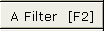
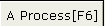

|
Tutoriel d'acquisition pour SVCD, par Jens 1.Acquisition J'ai acheté une carte Pinnacle PCTV pro qui devrait pouvoir acquérir en qualité DVD un flux MPEG2 encodé de façon logicielle. Il y a un câble audio, pour aller de la carte TV à la carte son, externe ou interne. Pour faire de l'acquisition sous Linux, NuppelVideo de Roman Hochleitner m'a semblé vraiment pratique. Une de ses particularités intéressantes est la production d'images copiées. Il génère une image copiée à partir de la précédente si l'image réelle (de la vidéo) est perdue. Cela permet de garder la synchronisation avec l'audio. Une fois le processus d'acquisition terminé, regardez ce que vous avez obtenu. Si vous n'avez aucune image copiée ou seulement une ou deux, vous disposez d'une excellente source pour les étapes suivantes. Si vous avez vraiment beaucoup d'images copiées apparaissent généralement groupées), c'est que vous avez des problèmes au niveau matériel ou que vous avez un peu trop sollicité votre OS pendant l'acquisition ;-) Pour utiliser cette fonction, vous devez appliquer deux options supplémentaires au module bttv du noyau. Cela se règle dans la fichier /etc/modules.conf. Le programme d'enregistrement nuvrec génère un ou plusieurs fichiers en sortie, d'une taille de 2 Go chacun. Comme je trouvais que ce n'était pas très pratique, j'ai écrit ce petit patch. Avec "-2" comme argument, vous obtenez le comportement initial, et sans argument, la sortie est stokée dans un seul gros fichier. Nuvrec génère en sortie un flux audio vidéo avec une compression RTJPEG - c'est le petit frère du format MJPEG. Vous devez choisir un canal avec un autre programme (xawtv par exemple), quitter ce programme et lancer nuvrec. La qualité avec un câble coaxial n'est pas terrible, aussi j'utilise l'entrée vidéo composite de ma carte TV et l'entrée line in de ma carte son Ensoniq ES1371. Je me suis créé un fichier spécial pour avoir le même profile audio à chaque fois. Selon le système de gestion du son que vous utilisez, il vous faudra peut-être passer en commentaire la partie OSS/kernel et décommenter la parie Alsa.
Acquisition d'une séquence avec ffv1rec Si vous avez un processeur rapide, vous avez également la possibilité d'utiliser ffv1rec, très gourmand en CPU, mais qui donne une image de meilleure qualité et un fichier plus léger. Les principes de base de la section précédente sont encore valables ici, car le flux généré est un fichier nuv modifié. 2.Encoder en Mpeg2/SVCD Le but de cette section est de créer un projet/fichier edl contenant le fichier de capture original, débarrassé de toutes les publicités et avec une vidéo aussi propre que possible. Nous allons commencer par créer un index du fichier pour pouvoir le recharger plus rapidement par la suite. Ouvrez le fichier File-> Open video : video.nuv. Une fois le chargement terminer, le programme vous demande d'enregister un index : video.nuv.idx Rechargez l'index que vous venez de générer. Pour chaque partie que vous souhaitez supprimer, positionnez le marqueur A à son début en cliquant sur Cela sélectionne la zone active [marqueurA,marqueurB[. Appuyez sur CTRL+X, et répétez l'opération pour vous débarrassez de tout ce dont vous ne voulez pas. Lorsque vous êtes content du résultat, enregistrez le fichier edl en choisissant Edit ->save edit list et en indiquant video.edl, par exemple. Nous avons à présent un fichier edl qui ne contient que les parties intéressantes de la vidéo. Encoder l'audio avec Avidemux : Rechargez le fichier edl, et réglez les filtres audio à l'aide de  Sélectionnez Normalize WAV, car nous voulons que tous les SVCD aient le même volume de base. N'oubliez pas de cliquer sur . Enfin, pensez également à sélectionner un codec ; dans notre cas, nous voulons de l'audio mpeg audio. Cliquez donc sur Audio codec, choisissez FFmpeg mpeg audio et configurez-le, par exemple en 224 kbits stéréo. Dernière étape, l'encodage ! File->save audio : video.mp2. Vous avez également la possibilité d'utiliser File->pipe audio->toolame, vous obtiendrez généralement un résultat de meilleure qualité. Encoder la vidéo avec Avidemux La première étape consiste à recharger le plan de travail :Edit->Load edl file. Nous allons à présent recadrer la vidéo, lui appliquer quelques filtres et la redimensionner au format SVCD. Nous accédons à la série de filtres avec CTRL-F ou Le premier filtre sera Crop, pour supprimer les bordures noires ou les parties pleines de parasites : n'hésitez pas à y aller franchement. Le bruit risque de compliquer l'encodage et de réduire la qualité générale. Il vous faudra aussi désentrelacer le film. Selon que vous utilisiez du Pal ou du NTSC et en fonction de la qualité de la source, vous opterez pour Deinterlac, Pal Smart, ivtc ... Testez-les avec la fonction d'aperçu et choisissez celui que vous préférez. Lorsque vous êtes content du résultat, cliquez sur le bouton SVCD Res pour le redimensionner en 480*xxx. Le programme considère que la source a un rapport de 1:1, alors opérez manuellement si ce n'est pas le cas. Dernière étape : l'encodage. Sélectionnez SVCD comme codec vidéo et configurez-le. Si vous avez beaucoup de temps devant vous, sélectionnez deux passes, sinon CQ = 7 par exemple. Dans les deux cas, le débit maximal doit être de 2300 pour correspondre aux spécifications SVCD. N'oubliez pas de régler le mode vidéo sur Process ! File / save video: video.m2v 3.Multiplexer l'audio et la vidéo Il existe deux programmes qui peuvent s'en charger :
4.Générer l'image SVCD Vous ne pouvez pas écrire directement les fichiers sur le CD-R. Pour créer un CD compatible SVCD, vous devez passer par vcdimager :
5.Graver l'image Bien sûr, vous devez remplacer sg0 par l'identifiant réel de votre graveur de cd.6.Extraire le fichier Mpeg du SVCD Il peut arriver que vous ayez besoin de récupérer les fichiers MPEG "originaux" du SVCD. Depuis le disque dur : Depuis le CD-R :7.Pour conclure Si vous avez des problèmes avec le SVCD obtenu, vous pouvez essayer une des solutions suivantes :
|
 , puis placez-vous sur la première image après la dernière image de la publicité et cliquez sur
, puis placez-vous sur la première image après la dernière image de la publicité et cliquez sur  .
. .
.